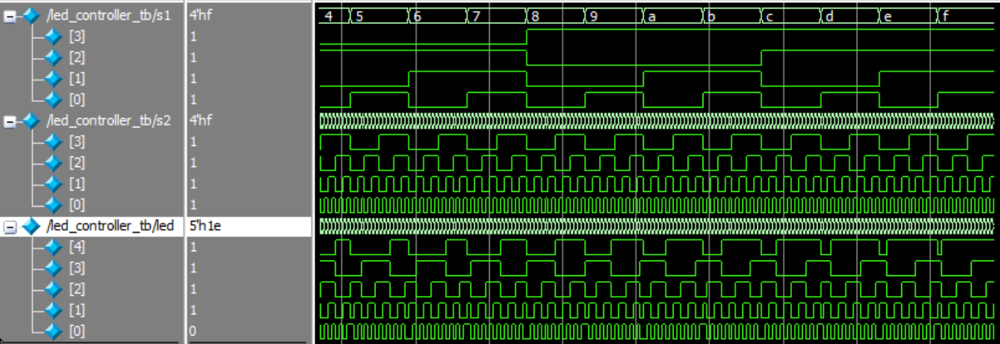

Lab 2: Multiplexed 7-Segment Display
Introduction
The goal of this lab was to implement a time multiplexing scheme on the UP5K FPGA to drive two seven-segment displays using only one set of I/0 pins. The full specs of this lab can be found on the lab 2 page of the Harvey Mudd E155 website.
Technical Documentation
The source code for the project can be found in the lab 2 folder of my Github repository for E155.
Block Diagram
Before I wrote any SystemVerilog, I created the following block diagram. This helped me understand the structure I believed my design should have prior to implementation. .
I used a 16-bit clock divider to take the internal 24MHz clock to 366 Hz, which was used to determine the refresh rate of the 7-segment displays. This was determined to be an acceptable refresh rate by visual inspection, as the displays neither flickered nor had the LEDs bleed together.
Testbenches
The waveforms and terminal outputs for display_logic.sv, display_controller.sv, and led_controller.sv are at the bottom of this section. display_logic.sv and led_controller.sv solely contained combinational logic. Each of these modules passed their respective testbenches. I wrote python scripts to generate test vectors for led_controller, display_controller, and lab2_dw. I also modified display_controller while testing it and while testing my top-level module. The only modification made was deactivating the clock divider in order to increase the speed of testing. The modifications can be seen below, along with the waveforms and terminal output for lab2_dw.
logic toggle;
logic [15:0] counter;
logic [3:0] sw;
// Clock divider
//always_ff @(posedge clk) begin
// if (reset) counter <= 0;
// else counter <= counter + 1;
//end
// assign toggle = counter[15];
assign toggle = clk;
assign t1 = toggle;
assign t2 = ~toggle;
assign sw = toggle ? s2 : s1;
display_logic DISPLAY(.s(sw), .seg(seg));

Circuit Design
In order to physically implement the desired design, I designed the following circuits using pins on the iCE40 FPGA. In order to make the switches operate properly, the internal 100k Ohm pull-up resistors on the iCE40 FPGA were enabled.

To select the resistors placed between the FPGA pins and the 2N3906 transistor, the datasheet for the ice40 FPGA was consulted. Sections 4.16 and 4.17 describe the electrical characteristics of the I/O pins. For a pin outputting 3.3V, the maximum current it can drive is 8 mA. The datasheet for the 2N3906 transistor states that the base-emitter saturation voltage is in the range of 0.65-0.75. This means that there is a voltage drop of approximately 0.75V across the base-emitter junction. Since VE = 3.3V, the base has a voltage of approximately 2.55V. Using Ohm’s Law, we see that a 2200 Ohm resistor results in a current draw of ~1.16mA to each FPGA pin.
In order to select the resistor values between the FPGAs and the LEDs on the 7-segment display, I consulted the datasheet for the HDSP-521A 7-segment display, which gives the forward voltage per segment as 2.0V. The LEDs are driven by the collector of the 2N3906 resistor when the corresponding pin is pulled low. I measured the voltage out of the transistor to be ~2.95V while debugging my toggle signals. Subtracting the forward voltage from the supply voltage, we see 0.95V across the resistor. A resistor value of 180 Ohms results in a current of ~5.3 mA is going into the LED segments.
Conclusion
The design meets all the requirements for the lab. I spent 15 hours working on this lab.
AI Prototype
I first provided ChatGPT 5 with the following instruction: “Write SystemVerilog HDL to time multiplex a single seven segment decoder (that decodes from four bits to a common anode seven segment display) to decode two sets of input bits and drive two sets of seven output bits.” It produced the following code:
//------------------------------------------------------------------------------
// Two-digit time-multiplexed seven-seg driver (common-anode, active-low)
// Reuses ONE decoder to drive TWO [6:0] segment buses.
//
// seg*_n is {g,f,e,d,c,b,a} with 0 = segment ON (active-low), 1 = OFF.
//
// Parametrize CLK_HZ and REFRESH_HZ to suit your board.
// REFRESH_HZ is the per-digit toggle rate (each digit is refreshed at REFRESH_HZ/2).
//------------------------------------------------------------------------------
module sevenseg2_mux #(
parameter int unsigned CLK_HZ = 50_000_000, // input clock in Hz
parameter int unsigned REFRESH_HZ = 1_000 // digit toggle rate in Hz
)(
input logic clk,
input logic rst_n,
// two independent 4-bit values to display (hex)
input logic [3:0] in0,
input logic [3:0] in1,
// two 7-bit segment buses (active-low), order = {g,f,e,d,c,b,a}
output logic [6:0] seg0_n,
output logic [6:0] seg1_n
);
// ------------------------
// Clock divider for refresh
// ------------------------
localparam int unsigned DIV = (CLK_HZ / REFRESH_HZ);
localparam int unsigned CW = (DIV > 1) ? $clog2(DIV) : 1;
logic [CW-1:0] divcnt;
logic tick; // 1-cycle strobe at REFRESH_HZ
logic sel; // which digit is currently active: 0 -> digit0, 1 -> digit1
always_ff @(posedge clk or negedge rst_n) begin
if (!rst_n) begin
divcnt <= '0;
tick <= 1'b0;
end else begin
if (divcnt == DIV-1) begin
divcnt <= '0;
tick <= 1'b1;
end else begin
divcnt <= divcnt + 1'b1;
tick <= 1'b0;
end
end
end
// toggle active digit on each tick
always_ff @(posedge clk or negedge rst_n) begin
if (!rst_n) begin
sel <= 1'b0;
end else if (tick) begin
sel <= ~sel;
end
end
// ------------------------
// Single shared decoder
// ------------------------
logic [3:0] cur_nibble;
logic [6:0] seg_dec_n; // active-low segments for current nibble
always_comb cur_nibble = sel ? in1 : in0;
// hex to seven-seg (common-anode, active-low), {g,f,e,d,c,b,a}
function automatic logic [6:0] hex_to_7seg_n(input logic [3:0] x);
unique case (x)
4'h0: hex_to_7seg_n = 7'b1000000;
4'h1: hex_to_7seg_n = 7'b1111001;
4'h2: hex_to_7seg_n = 7'b0100100;
4'h3: hex_to_7seg_n = 7'b0110000;
4'h4: hex_to_7seg_n = 7'b0011001;
4'h5: hex_to_7seg_n = 7'b0010010;
4'h6: hex_to_7seg_n = 7'b0000010;
4'h7: hex_to_7seg_n = 7'b1111000;
4'h8: hex_to_7seg_n = 7'b0000000;
4'h9: hex_to_7seg_n = 7'b0010000;
4'hA: hex_to_7seg_n = 7'b0001000; // A
4'hB: hex_to_7seg_n = 7'b0000011; // b
4'hC: hex_to_7seg_n = 7'b1000110; // C
4'hD: hex_to_7seg_n = 7'b0100001; // d
4'hE: hex_to_7seg_n = 7'b0000110; // E
4'hF: hex_to_7seg_n = 7'b0001110; // F
default: hex_to_7seg_n = 7'b1111111; // all off
endcase
endfunction
always_comb seg_dec_n = hex_to_7seg_n(cur_nibble);
// ------------------------
// Drive both outputs
// Only the "selected" digit shows the decoded pattern;
// the other is forced off (all 1s for active-low).
// ------------------------
localparam logic [6:0] OFF = 7'b111_1111;
always_comb begin
seg0_n = sel ? OFF : seg_dec_n;
seg1_n = sel ? seg_dec_n : OFF;
end
endmoduleThe SystemVerilog ChatGPT provided synthesized on the first attempt. It was interesting to see the LLM use structures like functions, which I didn’t know existed in SystemVerilog. I was also interested to see that it created two logic signals for the separate displays.
I next provided GPT-5 with the following instructions: “Write SystemVerilog HDL to time multiplex a single seven segment decoder (that decodes from four bits to a common anode seven segment display) to decode two sets of input bits and drive two sets of seven output bits. Use the seven segment decoder and oscillator provided in the attached files.” GPT-5 produced two separate SystemVerilog modules, which can be seen below.
// Author: ChatGPT
// Date: 2025-09-10
// Description:
// Time-multiplex a *single* seven-segment decoder (display_controller.sv provided)
// to drive *two* common-anode seven-segment displays using two 4-bit inputs.
// The decoder output is active-low (0 = segment ON), matching the provided decoder.
//
// The module uses the on-chip high-speed oscillator (HSOSC) like in lab1_dw.sv.
// Only one display is driven at a time; the other is forced OFF (all 1's).
// A fast refresh counter flips which display is active, giving the appearance
// that both are lit continuously (persistence of vision).
//
// Notes:
// - reset is treated as active-low to match the style in led_controller.sv.
// - REFRESH_BITS controls the per-digit refresh rate. With a ~24 MHz clock and
// REFRESH_BITS=14, each digit updates at ~732 Hz (overall toggle ~1.46 kHz).
module sevenseg_dual_mux (
input logic reset, // Active-low reset (0 = reset)
input logic [3:0] a, // 4-bit value for Display A
input logic [3:0] b, // 4-bit value for Display B
output logic [6:0] seg_a, // Segment lines for Display A (active-low)
output logic [6:0] seg_b // Segment lines for Display B (active-low)
);
// -------------------------------------------------------------------------
// Internal clock from on-chip high-speed oscillator (same primitive as lab1)
// -------------------------------------------------------------------------
logic int_osc;
// Initialize high-speed oscillator; same parameters as lab1_dw.sv
HSOSC #(.CLKHF_DIV(2'b01))
hf_osc (.CLKHFPU(1'b1), .CLKHFEN(1'b1), .CLKHF(int_osc));
// -------------------------------------------------------------------------
// Refresh logic
// -------------------------------------------------------------------------
parameter int REFRESH_BITS = 14; // Increase for slower toggle, decrease for faster
logic [REFRESH_BITS-1:0] refresh_ctr /* synthesis preserve */;
logic sel_digit; // 0 => drive A, 1 => drive B
always_ff @(posedge int_osc) begin
if (reset == 1'b0) begin
refresh_ctr <= '0;
end else begin
refresh_ctr <= refresh_ctr + 1'b1;
end
end
assign sel_digit = refresh_ctr[REFRESH_BITS-1];
// -------------------------------------------------------------------------
// Single decoder instance (provided module: display_controller)
// -------------------------------------------------------------------------
logic [3:0] s_mux;
logic [6:0] seg_decoded;
// Choose which 4-bit input the decoder sees at this moment
assign s_mux = (sel_digit == 1'b0) ? a : b;
// One (and only one) decoder instance
display_controller DEC (
.s (s_mux),
.seg (seg_decoded)
);
// Drive only the selected display; force the other OFF (all 1's for common anode)
always_comb begin
if (sel_digit == 1'b0) begin
seg_a = seg_decoded; // Active display gets decoded segments
seg_b = 7'b111_1111; // Other display off
end else begin
seg_a = 7'b111_1111;
seg_b = seg_decoded;
end
end
endmodule
// Example top-level that uses sevenseg_dual_mux with two 4-bit switch groups.
// Replace I/O names as needed for your constraints file.
module lab1_dual_top (
input logic reset, // Active-low reset
input logic [7:0] sw, // Eight switches: sw[3:0] -> Display A, sw[7:4] -> Display B
output logic [6:0] seg_a, // Seven-seg A (a..g), active-low
output logic [6:0] seg_b // Seven-seg B (a..g), active-low
);
sevenseg_dual_mux UUT (
.reset (reset),
.a (sw[3:0]),
.b (sw[7:4]),
.seg_a (seg_a),
.seg_b (seg_b)
);
endmoduleThe provided SystemVerilog synthesized upon the inclusion of display_controller.sv from lab 1 as a source file. However, GPT-5 did not provide the instruction to do that. Something I don’t like about LLMs is that they overcomment their code, which makes it more difficult to read. However, I was impressed that the LLM managed to provide SystemVerilog that synthesized with little effort.